Mooney Lab @ University of Southern California
Welcome! We are the Mooney Lab. Our goal is to use patterns of variation in the genome to understand the evolutionary and population histories of both humans and other species. We do this by implementing and developing computational and statistical methods to study the genome.
We are also interested in more broad population genetics questions such as: the genomic consequences of deleterious (non-neutral) mutations, where deleterious mutations tend to aggregate in the genome, and understanding patterns of genomic sharing through identity-by-descent segments and runs of homozygosity.
We are located at the University of Southern California (USC) in the Department of Quantitative and Computational Biology (QCB).

Our Research
For the last decade, population genetics has rapidly accelerated to new heights with the availability of sequence data. These data sets have provided valuable insights about population history, phenotypes, disease architecture, evolution, and genomic diversity.
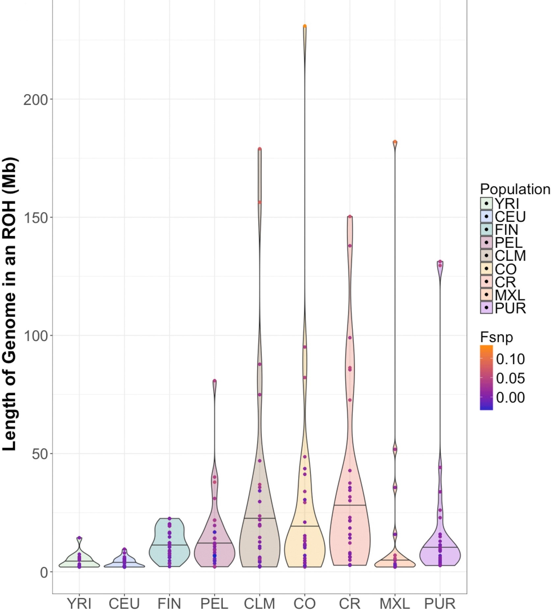
Broadly, our lab uses empirical data analysis, simulation frameworks, and methods development to do the following: 1) infer the demography, 2) understand the fitness impact of recessive variation, and 3) investigate complex trait architecture.
We focus primarily on integrating data from both human and non-human populations to develop a more complete picture of mechanisms that shape patterns of genomic sharing (in the form of identity-by-descent segments and runs of homozygosity) and deleterious variation. We are also interested in developing methods for conservation biology, inference of the genealogical histories of admixed populations, and the equitable inclusion of underrepresented populations in genomics.
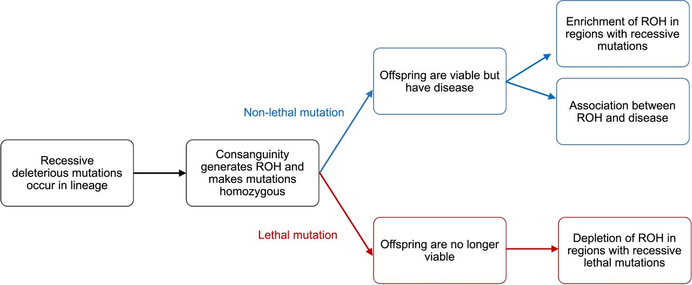
Join the Mooney Lab
We are glad you are interested in joining us!
I make every effort to create an inclusive lab environment where lab members not only learn the science but also are excited about the future of science. There are no required pre-requisites for joining the lab and lab members may come from any background. In the Mooney lab, most projects will include coding for genetic data analysis, some mathematics, simulation, and data visualization. Most of all, I want students to learn relevant skills for the next step in their career, in a lab where they feel like science is a place where they can grow and thrive.
Postdoctoral researchers
To inquire about postdoctoral positions, please write to Jazlyn at jazlynmo@usc.edu. Interest areas that would fit particularly well in the lab include the population genetics of runs of homozygosity, identity-by-descent segments, complex traits, and demographic inference.Please include a CV and a short description (1-2 pages) of your research experience, interests, and ideas for work in the lab. Please put “Postdoc position” in the subject line of your email to jazlynmo@usc.edu. Please also list 2-3 professional references and include any recent work you’d like to share.
PhD students
Feel free to contact me and put “Graduate student position” in the subject line of your email to jazlynmo@usc.edu. We can talk about potential research interests and relevant projects in the lab.Students should apply to USC’s Computational Biology and Bioinformatics (CBB) program. Our graduate program will give you experience in algorithms, statistics, and biology. During the first year, students will complete coursework as well as rotate in up to three CBB-affiliated labs. Students interested in completing a PhD in the lab should arrange to do one of their rotations with us. CBB admissions are handled by the admissions committee and not by individual labs.
Undergraduates, Master’s students, and others
We are looking to include USC undergraduates and Master's students on research projects. If you are interested in joining the lab, email me with the relevant header of either “Undergraduate student position” or " Master’s student position" in the subject line of your email to jazlynmo@usc.edu. Please include a CV, relevant course history, and statement of interest.Experience with command line, Python, R, C/C++, would be beneficial but are not necessarily required.
Contact Us
Email: jazlynmo@usc.edu
We are located on the 4th floor of Ray R. Irani Hall (RRI) at the University of Southern California, in the University Park neighborhood of Los Angeles.
The closest parking structure is the Downey Way Structure.
USC Maps
Our Publications
2024
Armstrong EE, Bissell KL, Fatima HS, ... Mooney JA & Mychajliw, AM. Chromosome-level assembly of the gray fox (Urocyon cinereoargenteus) confirms the basal loss of PRDM9 in Canidae, G3 Genes|Genomes|Genetics,, 2024 15 February; https://doi.org/10.1093/g3journal/jkae034.
Agranat-Tamir L, Mooney JA, and Rosenberg NA. Counting the genetic ancestors from source populations in members of an admixed population, GENETICS, 2024 30 January; https://doi.org/10.1093/genetics/iyae011.
2023
Mooney JA, Agranat-Tamir L, Pritchard JK, and Rosenberg NA. On the number of genealogical ancestors tracing to the source groups of an admixed population, GENETICS, 2023 6 July; https://doi.org/10.1093/genetics/iyad079.
2022
Tidyverse Session at SACNAS
Mooney JA,Marsden CD, Yohannes A, Wayne RK, Lohmueller KE. Long-term small population size, deleterious variation, and altitude adaptation in the Ethiopian wolf, a severely endangered canid, Mol Biol Evol, 2022; msac277, https://doi.org/10.1093/molbev/msac277
2021
Mooney JA, Yohannes A, and Lohmueller KE. The impact of identity by descent on fitness and disease in dogs, Proc Natl Acad Sci U S A. 2021 Apr 20;118(16) PubMed Central PMCID: PMC8072400.
2019
Sura SA, Smith LL, Ambrose MR, Amorim CEG, Beichman AC, Gomez ACR, Juhn M, Kandlikar GS, Miller JS, Mooney JA, Mummah RO, Lohmueller KE, Lloyd-Smith JO. Ten simple rules for giving an effective academic job talk. PLoS Comput Biol, 2019; 15:e1007163.
2018
Mooney JA, Huber CD, Service S, Sul JH, Marsden CD, Zhang Z, Sabatti C, Ruiz-Linares A, Bedoy G, Costa Rica/Colombia Consortium for Genetic Investigation of Bipolar Endophenotypes, Freimer N, Lohmueller KE. Understanding the hidden complexity of Latin American population isolates. Am J Hum Genet.2018 Nov 1;103(5):707-726. PubMed Central PMCID: PMC6218714.
The Team
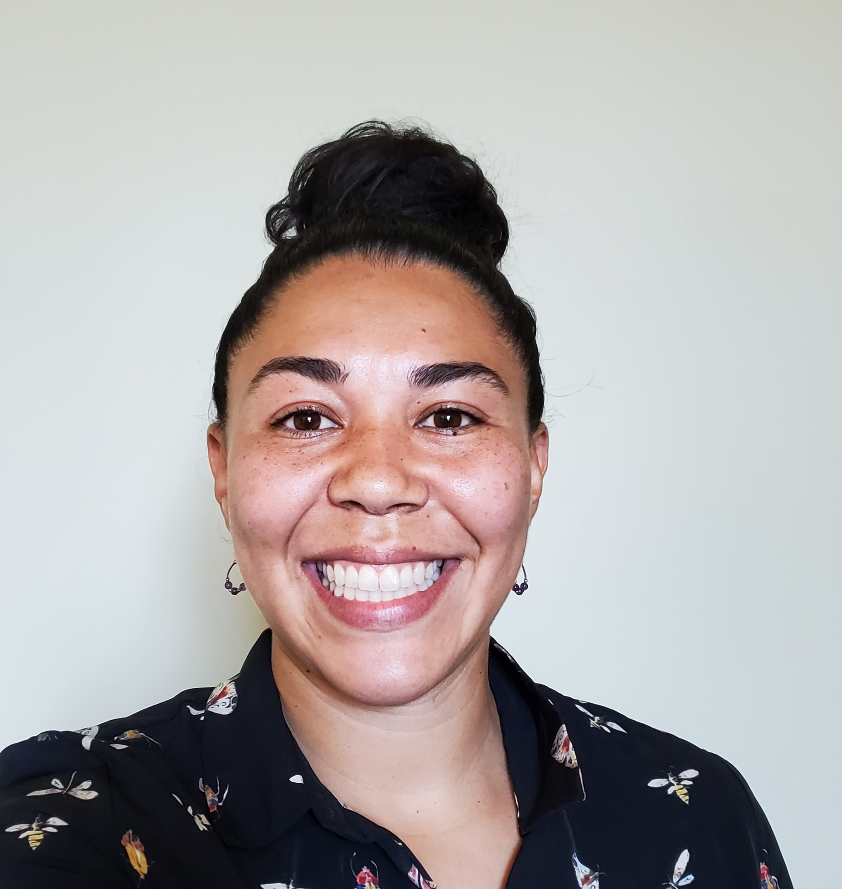
Jazlyn Mooney (she/her)
Principal Investigator (jazlynmo@usc.edu)Jazlyn is a Gabilan Assistant Professor in the Quantitative and Computational Biology (QCB) Department within the Dornsife College of Letters, Arts and Sciences at USC. Her research combines computational approaches with population genetics theory to better understand genetic variation, medical genetics, and human evolution. Jazlyn's CV
Jazlyn completed her undergraduate degree at the University of New Mexico where she studied human evolution with Jeffrey Long in the department of Anthropology. She completed her PhD in Human Genetics at UCLA in 2020 under the advisement of Kirk Lohmueller. At UCLA, Jazlyn studied genetic variation in admixed populations, complex traits in dogs, and conservation genomics. Afterward, she moved to Stanford’s Biology department for postdoctoral research with Noah Rosenberg; where she continued to study admixed populations with a focus on inference method development.
Fun fact from Jazlyn: When I am not in lab, I enjoy record collecting and going to concerts.
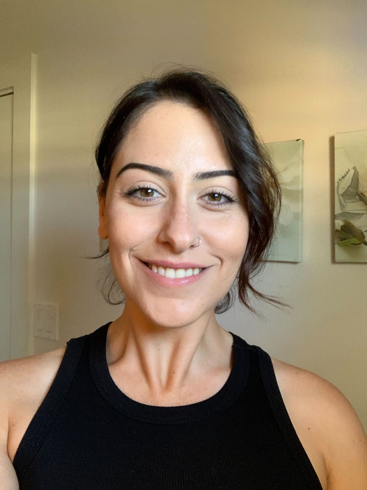
Maria Akopyan (she/her)
Postdoctoral FellowDr. Maria Akopyan is a postdoc in the Mooney lab, she completed her PhD at Cornell where she studied gene flow and adaptation in Atlantic silversides. Dr. Akopyan also holds an M.S. which she completed at CSUN where she studied variation in Red-eyed Tree frogs. Currently, she is exploring how reference bias can affect demographic inference in Canidae by using whole genome sequence data from Mainland foxes and Channel Island foxes.
Fun fact from Maria: I like to paint and dance!
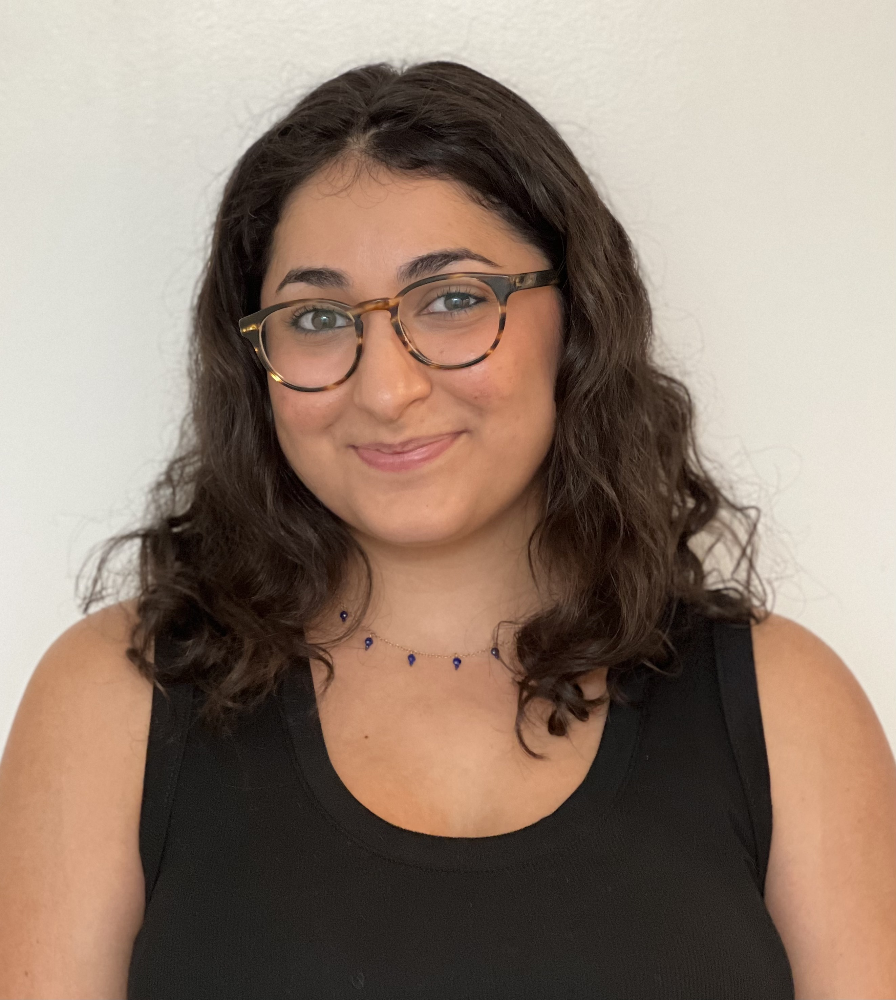
Shirin Nataneli (she/her)
Graduate studentShirin is a graduate student in the Computational Biology and Bioinformatics program and is broadly interested population genetics and evolution. Currently, she is exploring how we can better model complex admixture scenarios to infer demography in humans and populations of conservation concern.
Fun fact from Shirin: I've collected snow globes from every place I've traveled and my favorite animal is a sheep.
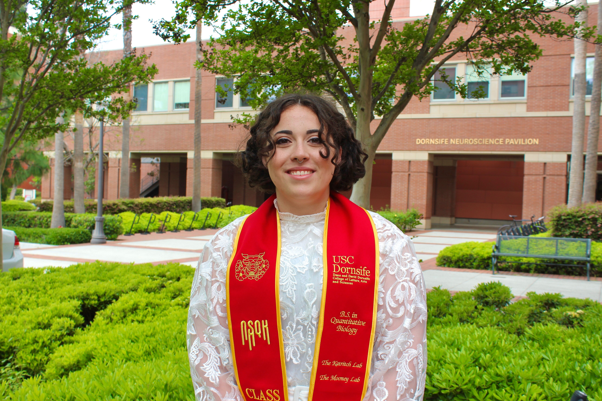
Tessa Ferrari
Lab TechnicianTessa just graduated from the Quantitative Biology undergraduate program and is now a lab Research Technician. While in the Mooney Lab, Tessa will be building and using large-scale simulation frameworks to infer demography and model mutational load.
Fun fact from Tessa: In my free time I’m a competitive hip hop and open style dancer!
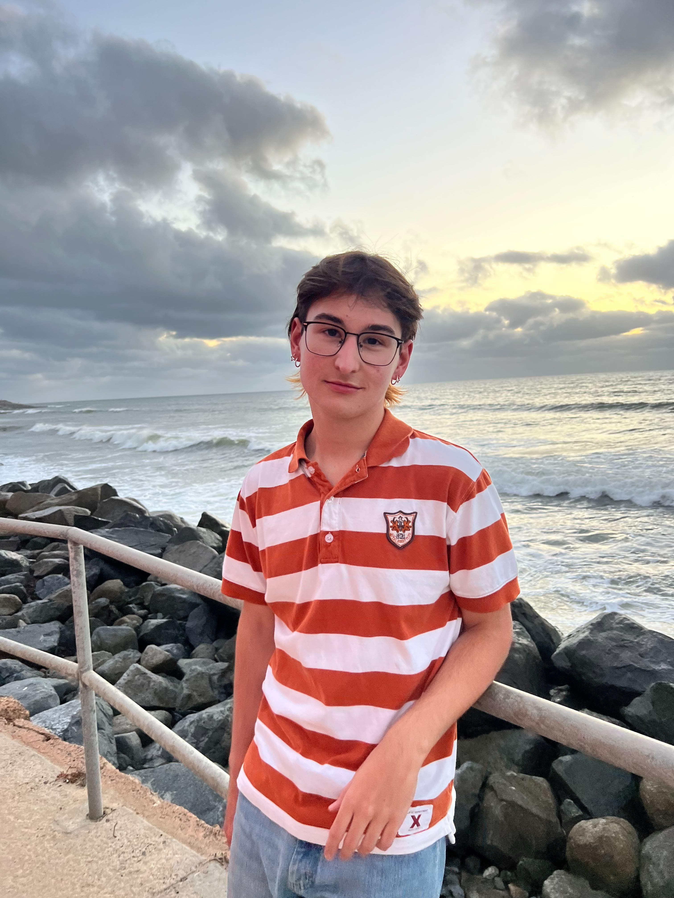
Matthew Genchev
Undergraduate studentMatthew is an undergraduate in the Quantitative Biology program with an interest in modeling recombination and demography in non-human populations. Matthew is currently exploring recombination and demography in Canidae, specifically foxes. Matthew is also a Provost Undergraduate Research Fellow.
Fun fact from Matthew: I won $20 from a scratch off ticket one time.
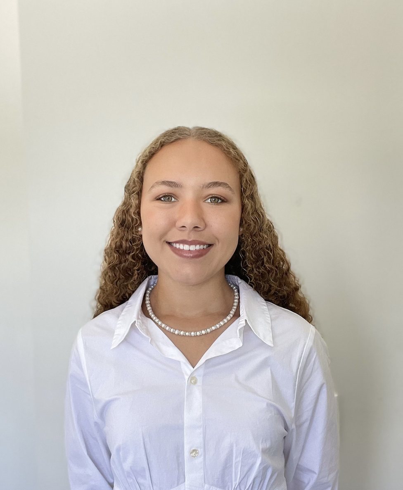
Sydney Bruce
Undergraduate studentSydney is an undergraduate in the Quantitative Biology program with an interest in population genetics and systems biology. Currently, Sydney is working to create a recombination map for captive tigers in the U.S. and will be exploring the relationship between genetic diversity and the recombination landscape in tigers.
Fun fact from Sydney: I work as an EMT during the summers!
Tina Lasisi (she/her)
Former Postdoctoral FellowDr. Tina Lasisi is now an Assistant Professor at the University of Michigan in the Anthropology department, and a former Postdoctoral Researcher in the Mooney and Edge labs. Tina's background and interests fall within the realm of Biological Anthropology and complex trait genetics. Specifically, her research area includes understanding the evolution of human variation in 1) pigmentation and 2) scalp hair. Tina is also active in science communication. Check out Tina's website and her amazing PBS mini-series Why Am I Like This?.
Fun fact from Tina: I have a standard poodle.
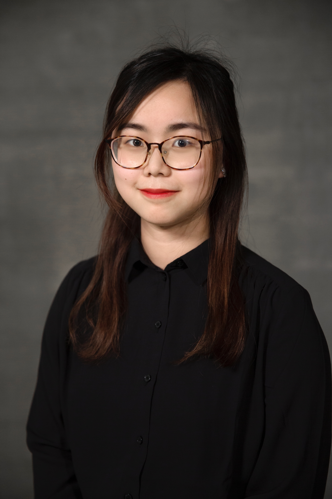
Mengdi (Kim) Chai
Former Undergraduate studentMengdi is an alumni of the Mooney Lab and graduated with honors from the Quantitative Biology undergraduate program. While in the lab, Mengdi was a WiSE undergraduate fellow and used identity-by-descent segments to identify genes associated with coat color in tigers and tracking their ancestral origins. She is currently pursuing a Master's Degree at Harvard in Computational Biology and Quantitative Genetics.
Fun fact from Kim: I have one hamster and he is cute! I decide to have two dogs, one cat, and two hamsters when I have my own apartment!
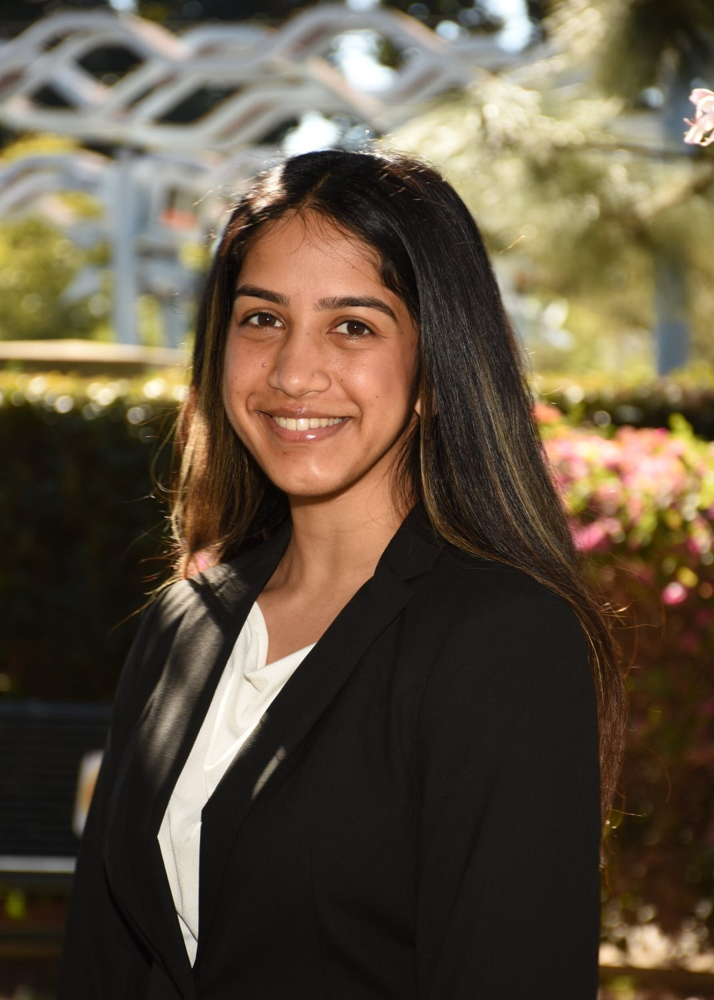
Anika Shrivastava
Former Undergraduate studentAnika was an undergraduate in the Quantitative Biology program and is interested in human genetics and disease. While in the lab, she worked on quantifying regions of the genome that harbor potential recessive lethal mutations by layering information from multiple types of genomic annotations. Anika was also a Provost Undergraduate Research Fellow and has recently completed an internship at Expedia.
Fun fact from Anika: I have been playing the piano for 15 years and have a minor in musical studies at USC.
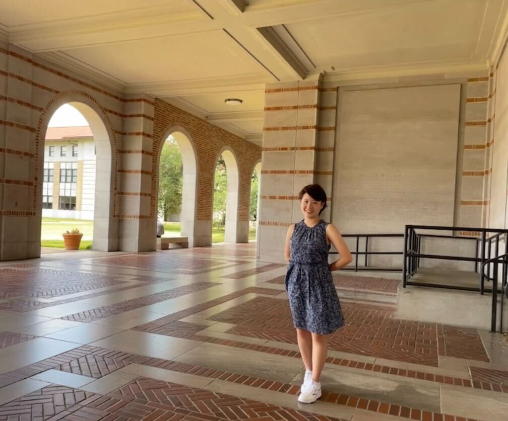
Chenyang (Julie) Li
Former Undergraduate studentJulie was an undergraduate in Applied and Computational Mathematics & the Quantitative Biology program with an interest in conservation and disease. She created the population assignment algorithm for mPCRselect, which allows users to construct informative marker panels in populations of conservation concern. She was a WiSE Undergraduate Fellow, graduated with honors and received the USC Discovery Scholar Distinction. Julie will be heading to Emory to join the Population Biology, Ecology, and Evolution PhD program.
Fun fact from Julie: I've never dyed my hair. My reddish/brown hair color is my natural hair color.